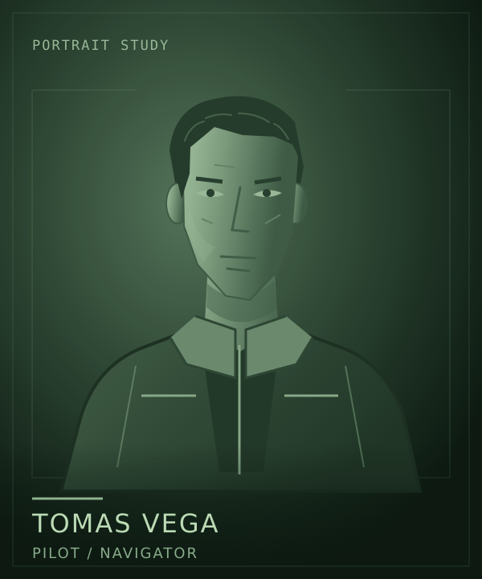

Lore / Tomas Vega
Tomas Vega
 | |
| Portrait concept. Appearance and clothing are not established designs. | |
| Role | Pilot and navigator |
|---|---|
| Employer | Clearwell Waterworks |
| Intention | Complete the posting and leave |
{kind=link}
Tomas Vega is the pilot and navigator aboard Kaveri, Jonah Mercer's Clearwell workship. Precision, rather than recklessness, defines the job. Tomas wants the crew to arrive where it intends to go, with a workable plan for what happens next.
The cost of a promise
Tomas questions risks that other people volunteer the crew to take. A generous intention does not settle who will bear the consequences, or whether the ship can finish the work already promised.
That caution can sit uneasily beside Rina Okafor's determination to help station residents. The disagreement is about obligations, not a simple division between courage and cowardice.
A future elsewhere
Like Jonah, Tomas expects the posting to end with a return to Earth. A working life at Saturn does not have to become a permanent one to deserve respect.
Tomas shares that intention with the captain without becoming an automatic supporter of every command. The people aboard remain entitled to question how their common future is being spent.